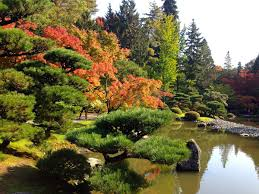
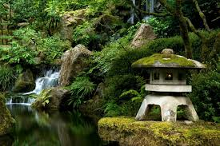
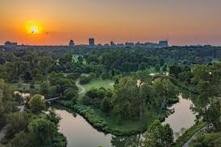
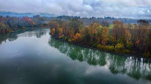
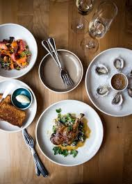
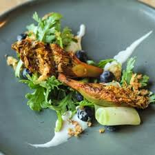

Portland, localizada no estado do Oregon, é considerada uma das cidades mais sustentáveis dos Estados Unidos. A cidade é conhecida por suas fortes políticas ambientais, grande quantidade de ciclovias, arquitetura verde e amplos parques urbanos. Portland incentiva o uso de transporte sustentável, energia renovável e a produção local de alimentos orgânicos, sendo referência mundial em planejamento urbano sustentável.

Washington Park, uma grande área verde com jardins, trilhas e espaços naturais.

Jardim Japonês de Portland, considerado um dos mais bonitos fora do Japão.

Forest Park, uma das maiores florestas urbanas dos Estados Unidos.

Willamette River Greenway, uma área natural protegida ao longo do rio.

Restaurantes que utilizam ingredientes orgânicos e produtos locais.

Portland é famosa por sua cultura gastronômica sustentável e alimentos produzidos localmente.